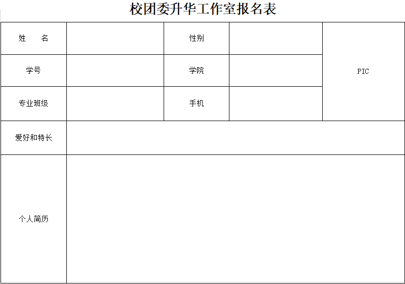
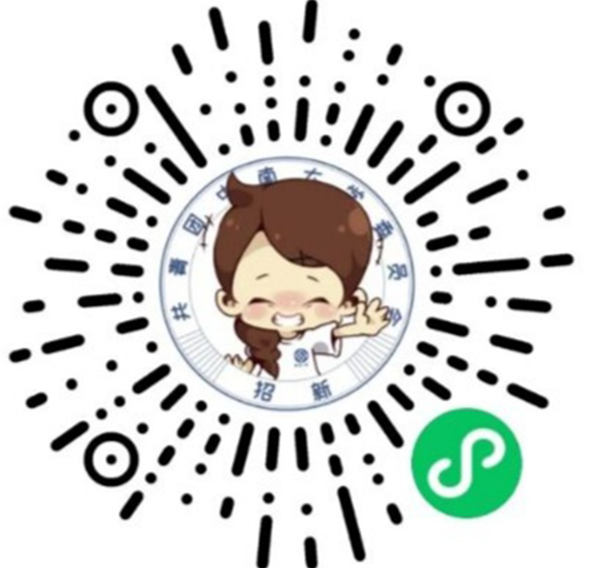

在古老的中南大学里面有着这样一个传闻，在中南大学的一个神秘的地方，分别珍藏着七颗威力无与伦比的龙珠，而倘若一个人能获得哪怕一颗龙珠，他就能逐渐拥有超乎常人的智慧与力量，还能打开新世界的大门，见识到更多实力强大的强者们。 而那个神秘的地方便是————升华办公室！
升华工作室又称校团委网络信息部，隶属于共青团中南大学委员会，下设程序部、网络部、视频团、美工部、 办公室、信息部、运营部七大部门。我们负责着“中南小团子”哗哩哗哩官方账号，并与团委宣传部一起参与了“中南小团子”微信公众号的运营。与此同时，我们还开发了学生组织招新、中南初印象等微信小程序。 想要开发有意思的小程序，制作播放过万的热门视频，撰写阅读量十万+的推送，或是单推小团子虚拟形象?你感兴趣的都在升华工作室!更好的升华需要更优秀的你,我们在这里诚挚地邀请各位新同学加入我们，一起为升华工作室的明天而努力!
报名方式1:于2021年9月19日上午九点至下午五点到南校区二食堂外草坪处领取并当场填写报名表格，也可先自行打印报名表格的word文档（可点击下方图片保存后打印）然后于19日交

报名方式2：用微信扫描下方二维码填写个人信息并报名

报名方式3：加入我们的qq群：12345678，并从中随便寻找一个帅气的学长，将所需的个人信息发给他，麻烦他帮你填表（前提是学长有时间哈）
1.好好学习，千万千万千万不要挂科。不要听外面那些不挂科的大学是不完整的，等你挂科了，你会羡慕那些拿奖学金的人。
2.合理使用生活费.在没有赚钱能力的情况下，要合理使用爸妈给的生活费。不要攀比，尽量不要使用花呗、京东白条等等，最不能接触的就是校园贷。
3.学会拒绝。刚入大学可能会有许多师兄师姐（甚至大部分可能是校外人员，假装师兄师姐）给你们推销一些小物品，但如果自己实在不需要，要学会拒绝
4.多准备些自我介绍。军训，竞选班干，报名组织等等都需要用到自我介绍，提前准备肯定不会错的啦。
5.警惕传销。凡是叫你交钱进入什么组织可以学习什么能力的，都需要警惕警惕再警惕。
6.尊重室友的休息时间。半夜要用电脑，请使用耳机、轻敲键盘。
7开学期间很多外校人员会混进来，这时候个人物品很容易丢失。请记住，寝室并不是保险箱，贵重物品一定要保管好，大额现金务必存在储蓄卡里，也别用生日或手机号码做密码。
8学会自己查找信息。养成注意看中南e行，中南大学官网和学院官网的习惯，学校很多事情不注意就错过了。
9很多事情别人通知你了，要说谢谢，没有通知你，不要责怪别人，因为那些事你其实应该自己弄清楚。
10.男女比例和脱不脱单没什么关系，不要将没有找到女朋友的事情怪罪到男女比例上（话题变得奇怪起来）
11.打印店打印时不要登陆qq账号，否则qq可能有封号风险。
12合理规划好自己的时间。没事干的话可以可以和新同学聊聊天或预习一下，不要窝宿舍打游戏。
13.刚开学还不怎么忙的时候可以多参加一些活动，如心理短剧，校运会等
14.最好选择一个组织加入以充实自己的课外生活，比如升华办公室网络部就很不错。
15........
16........
17.......
18.......
19......
20.Last but not least,多祈雨，小心学长学姐们种太阳成功！
能进升华办公室的学长学姐肯定都是非常优秀的啦，对你掌握一些专业技术知识有一定的指导作用
比如网络部的学长学姐可以帮你解决一些包括但不限于web前端开发的问题
程序部的学长学姐可以给你关于figma制作app的 logo上面的一些指引
又比如视频团有些学长学姐是b站上的up主，对剪辑视频什么的都有一些见解和经验分享给你们
......
......
其实我写了那么多，就是希望我锚点链接的效果可以做出来你能加入我们升华办公室的大家庭!